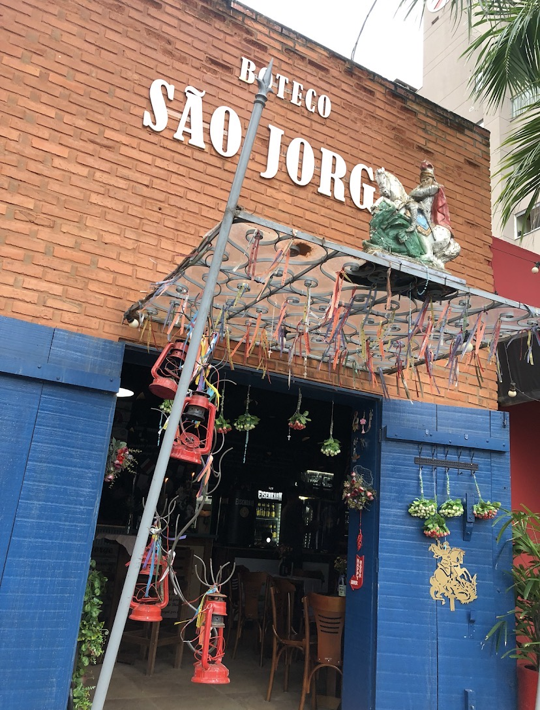
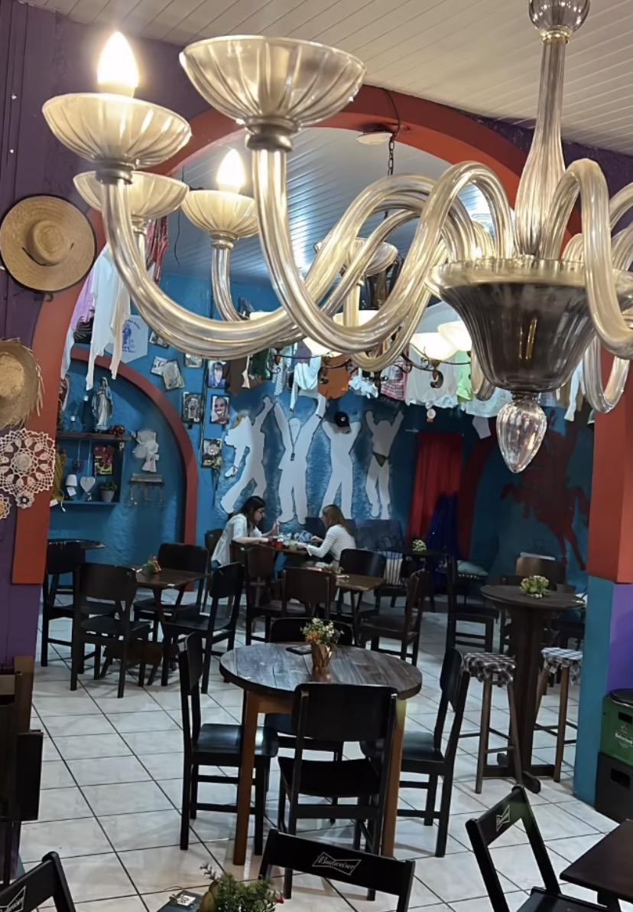
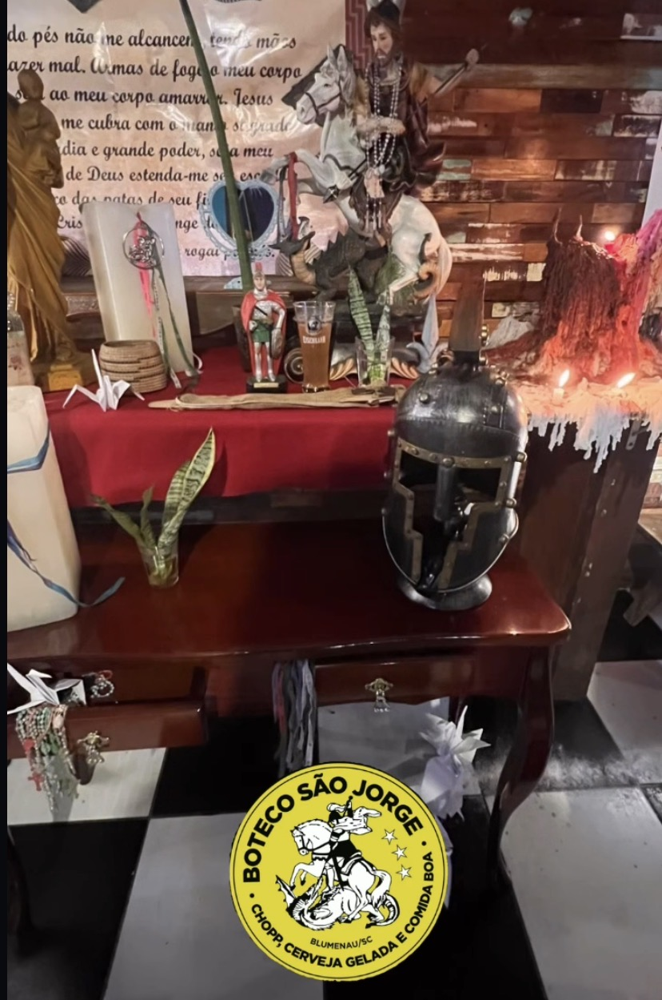
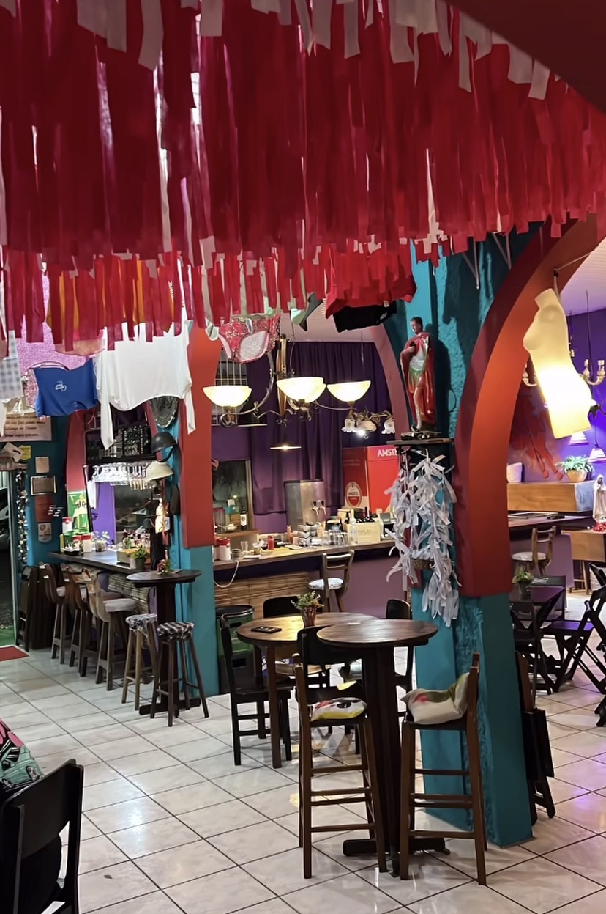
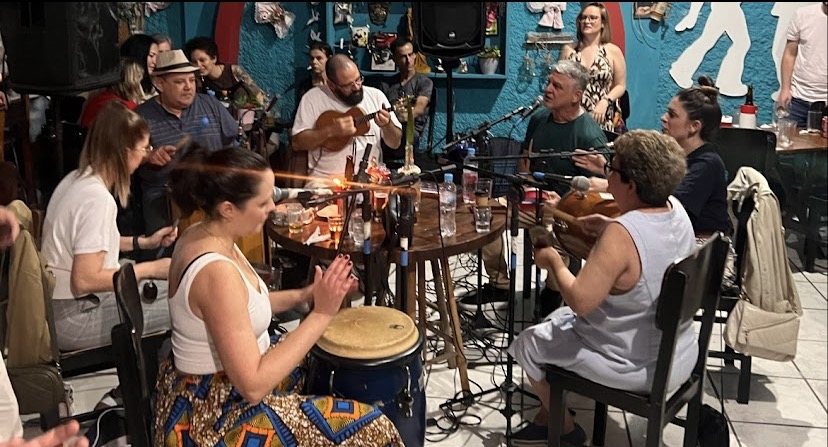

O nome São Jorge não foi escolhido à toa. É homenagem ao santo guerreiro, símbolo de força e proteção, valores que carregamos desde o primeiro dia de portas abertas em Blumenau.
Começamos pequenos, com poucas mesas e a vontade de fazer do boteco um lugar onde ninguém se sente de fora. Hoje seguimos o mesmo princípio: casa cheia, chopp gelado e comida feita com carinho.
Acreditamos que boteco bom não precisa de fórmula complicada: ingredientes de qualidade, receitas testadas e uma equipe que gosta de servir. É isso que colocamos em cada petisco e em cada chopp que sai do balcão.
Trabalhamos com fornecedores locais sempre que possível e mantemos a cozinha aberta ao improviso — se o cliente pede um ajuste no prato, a gente ouve.


Mais do que uma logo, São Jorge tem um cantinho de devoção reservado dentro do boteco — fitas, imagens e lembranças de quem também é devoto e faz questão de deixar sua homenagem por ali.
É esse espírito de proteção e força que guia o nome do nosso boteco desde o primeiro dia.

Time que garante cada prato saindo quente e no ponto certo, todos os dias de casa cheia.

Responsável pelo chopp sempre gelado e pelos drinks autorais da casa.

Time de atendimento que faz questão de conhecer o cliente pelo nome.
Terça a sábado, a partir das 18h. Reserve sua mesa e garanta lugar.
Reservar Mesa